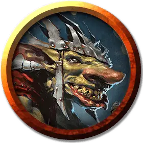

Кренко
Krenko
Маленький Гуманоид (Гоблиноид), нейтрально-злой, именной НИП

Класс Доспеха 17 (кольчужная рубаха, щит)
Хиты 21 (6к6)
Скорость 30 футов
| мод | спас | ||
|---|---|---|---|
| СИЛ | 10 | +0 | +0 |
| ЛОВ | 14 | +2 | +2 |
| ТЕЛ | 10 | +0 | +0 |
| мод | спас | ||
|---|---|---|---|
| ИНТ | 10 | +0 | +0 |
| МДР | 8 | −1 | −1 |
| ХАР | 14 | +2 | +2 |
Навыки Обман +4, Скрытность +6, Убеждение +4
Чувства тёмное зрение 60 футов, пассивное Восприятие 9
Языки Общий, Гоблинский
Опасность 1 (200 опыта)
Бонус мастерства +2
Особенности
Ловкий побег. Гоблин может в каждом своём ходу бонусным действием совершать действие Засада или Отход.
Действия
Мультиатака. Кренко совершает две атаки Скимитаром.
Скимитар. . Рукопашная атака оружием: +4 к попаданию, досягаемость 5 фт., одна цель. Попадание: 5 (1к6 + 2) рубящего урона плюс 2 (1к4) урона ядом.
Длинный лук. . Дальнобойная атака оружием: +3 к попаданию, дистанция 80/320 фт., одна цель. Попадание: 6 (1к8 + 2) колющего урона.
Реакции
Перенаправление атаки. Когда существо, которое Кренко может видеть, совершает по нему атаку, Кренко выбирает другого гоблина, находящегося в радиусе 5 футов от него. Оба гоблина меняются местами, и выбранный им гоблин становится целью вместо него.